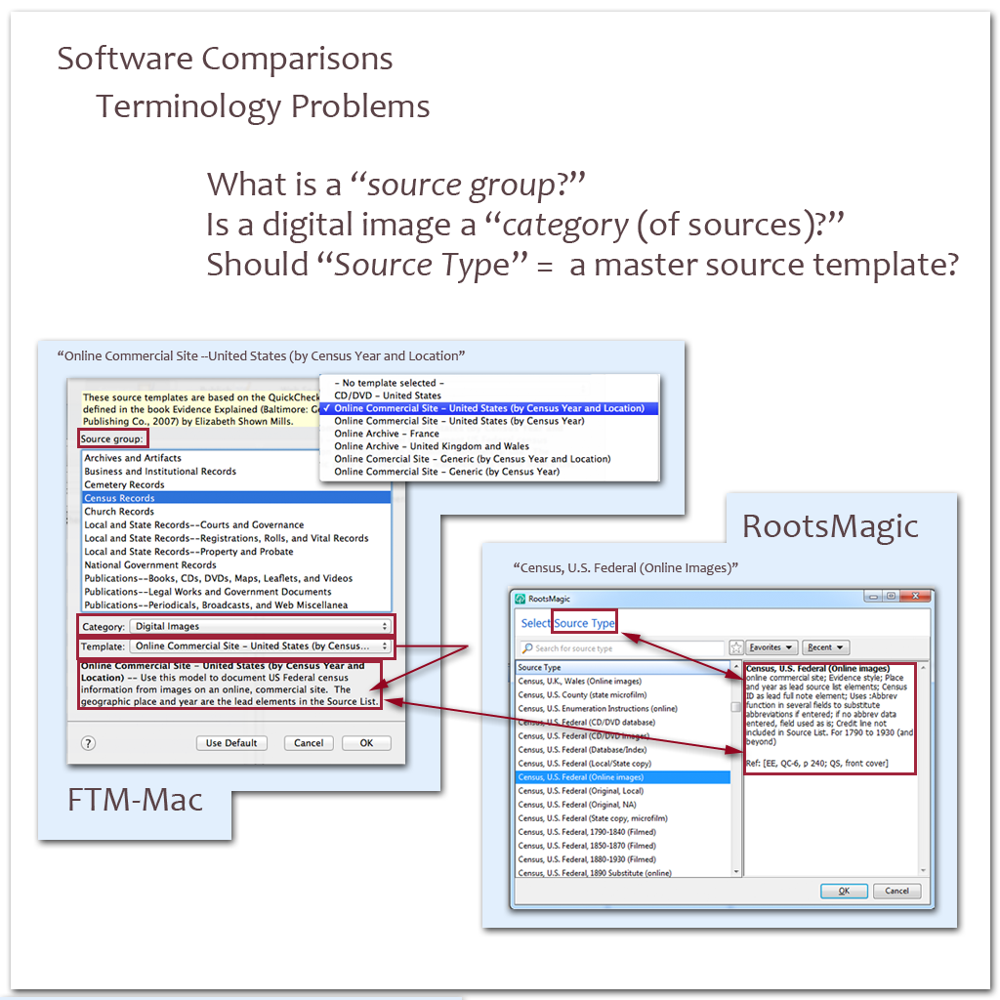
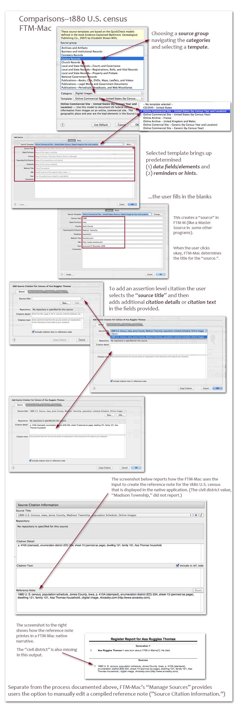
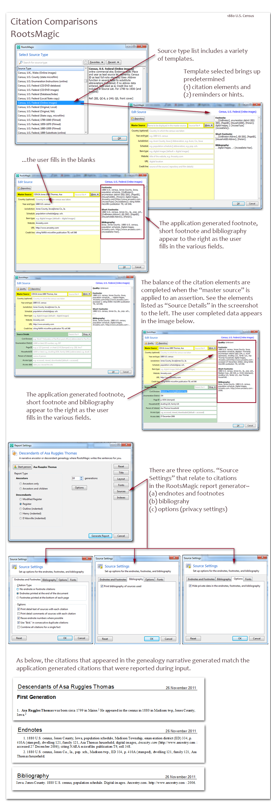

HOME >
EE & GPS Support >
About Citations > Software Citations
Using the same source, I'm going to try to create citations in a few different software programs, and use some graphics to report about the process. Hoping to show the lack of standardized terminology and different citation mechanics in play.
A. Software Comparisons-Terminology and Mechanics: (i) Source Types (vs Templates)
B. Citation Comparisons-1880 U.S. Census (accessed via Ancestry.com):
(i) FTM-Mac Graphic (ii) RootsMagic Graphic
A. Software Comparisons-Terminology and Mechanics
(i) Source Types (vs Templates)

B. Citation Comparisons-1880 U.S. Census (accessed via Ancestry.com):
(i)
FTM-Mac (ii)
RootsMagic
(i) 1880-FTM-Mac Graphic

Note: for some reason, the access date also didn't report in the application view or the printed journal entry. It outputs to GEDCOM 5.5, though. Below is the export to 5.5 from the file.
0 HEAD
1 SOUR FTM
2 VERS Family Tree Maker (19.2.1.241)
2 NAME Family Tree Maker for Mac OS X
2 CORP Ancestry.com
3 ADDR 360 W 4800 N
4 CONT Provo, UT 84604
3 PHON (801) 705-7000
1 DEST GED55
1 DATE 31 JUL 2011
1 CHAR ANSI
1 FILE /Users/MEBE/Desktop/Thomas_2011-07-31_01.ged
1 SUBM @SUBM@
1 GEDC
2 VERS 5.5
2 FORM LINEAGE-LINKED
0 @SUBM@ SUBM
0 @I00001@ INDI
1 NAME Asa Ruggles /Thomas/
1 SEX U
1 BIRT
2 DATE ABT 1799
2 PLAC Maine
2 SOUR @S00001@
3 PAGE p. 410A (stamped), enumeration district (ED) 334, sheet 13 (penned as
4 CONC page), dwelling 121, family 121, Asa Thomas household
1 CENS
2 DATE 1850
2 PLAC Florence, Williams, Ohio, USA
1 DEAT
1 CENS
2 DATE 1880
2 PLAC Madison, Jones, Iowa, USA
2 SOUR @S00001@
3 PAGE p. 410A (stamped), enumeration district (ED) 334, sheet 13 (penned as
4 CONC page), dwelling 121, family 121, Asa Thomas household
1 FAMC @F00001@
0 @I00003@ INDI
1 NAME Mary /Rugges/
1 SEX F
1 ALIA Polly
1 FAMS @F00001@
0 @I00002@ INDI
1 NAME Daniel /Thomas/
1 SEX M
1 FAMS @F00001@
0 @F00001@ FAM
1 HUSB @I00002@
1 WIFE @I00003@
1 CHIL @I00001@
2 _FREL Natural
2 _MREL Natural
0 @S00001@ SOUR
1 TITL 1880 U.S. Census, Iowa, Jones County, Madison Township, population
2 CONC Schedule; Online Images
1 NOTE
2 CONC 1880 U.S. census. population schedule. Iowa. Jones County.
2 CONC Digital images. Ancestry.com. http://www.ancestry.com : accessed 27
2 CONC December 2006.
0 TRLR
(ii) 1880-RootsMagic Graphic

The GEDCOM created from these various Thomas entries in RootsMagic follows.
Note: I turned off the export option to include "Extra Details (RM specific)."
0 HEAD
1 SOUR RootsMagic
2 NAME RootsMagic
2 VERS 4.0
2 CORP RootsMagic, Inc.
3 ADDR PO Box 495
4 CONT Springville, UT 84663
4 CONT USA
3 PHON 1-800-ROOTSMAGIC
3 WWW www.RootsMagic.com
1 DEST RootsMagic
1 DATE 31 JUL 2011
1 FILE Thomas1880RMtoGEDc.ged
1 GEDC
2 VERS 5.5.1
2 FORM LINEAGE-LINKED
1 CHAR UTF-8
0 @I1@ INDI
1 NAME Asa Ruggles /Thomas/
2 GIVN Asa Ruggles
2 SURN Thomas
1 SEX M
1 _UID A42147C706A04C7EA850C1871BB1CC274291
1 CHAN
2 DATE 31 JUL 2011
1 BIRT
2 DATE CA 1799
2 PLAC Maine
2 SOUR @S2@
2 SOUR @S2@
3 PAGE Madison Township||Madison twp.; 334; p. 410A (stamped); dwelling 121, family 121; Asa Thomas household; 27 December 2006
1 CENS
2 DATE 1880
2 PLAC Madison twp, Jones County, Iowa
2 SOUR @S2@
3 PAGE Madison Township||Madison twp.; 334; p. 410A (stamped); dwelling 121, family 121; Asa Thomas household; 27 December 2006
1 DEAT Y
0 @S2@ SOUR
1 ABBR CEN IA Jones 1880 Thomas, Asa
1 TITL 1880 U.S. census, Jones County, Iowa, population schedule, , ; digital i
2 CONC mages, <i>Ancestry.com</i> (http://www.ancestry.com : accessed ); citin
2 CONC g NARA microfilm publication T9, roll 348.
0 TRLR
Am I right in saying that the extra assertion level data (i.e. that which does NOT come from the source record) is just free format, in that it's just one box for "citation detail" and you decided yourself what to put in there with no hinting from FTM? So FTM couldn't do anything with that data other than output it as input (or not)?
Whereas RootsMagic actually has individual boxes for those - at least on input.
I presume it stores them as individual boxes so that if you went back to edit that data, you'd see the boxes again, not one string of text? Because in that case, would it be possible to re-do the output template and so alter already existing data when it comes to print?
You wrote, "Whereas RootsMagic actually has individual boxes for those - at least on input."
Under the RootsMagic "More" drop down box,* we find the equivalent of the FTM fields, "Citation Detail" and "Citation Text." RM calls it "Detail Text" and "Detail Comments." So ... the citation-specific/assertion specific fields in the RootsMagic template (green section of its "Edit Source" window) see, better characterized as additional non-standard fields it's declaring at the citation or assertion specific level.
*You can see the RM "More" drop down box in the images, but it hasn't been well presented in the graphics yet. (Will make sure it is when I get to that step on this page.) BTW, Roots Magic has the same drop down box at both the master source and citation specific level:
Master Source "More"
"Source Detail"
"Source Comments"
"Source Media"
Citation Specific/Assertion Specific "More":
"Detail Text"
"Detail Comments"
"Detail Media"
Does this help?--GJ
In FTM-M, the "master source" vs "citation-specific" level input dilema is particularly noticeable in the master source level field associated with the URL. The field is "Year," and the helper hint reads, "Year the website created or copyrighted"
Err...??? we usually want to record the "access date," right.
You can see in the 1880 FTM-Mac Graphic, that I typed in "accessed 27 December 2006," but my input didn't report in the FTM-M screen representation (""reference note"), nor did it output to the FTM-M journal narrative.
That access date did output to GEDCOM.
The same thing happened with FTM-M's element for civil district, I input, but FTM-M only output to GEDCOM.
When I created the graphics, the elements missing in the application representations seemed to be a bug. Indeed, they are both "citation elements" with a "master source level" vs "citation specific level" identity crisis.
Both of these vendors, FTM and RM, want to put the "website" and "URL" in the master source, but then the sister field, "access date" goes into never-never land. RM's solution was to create a non-standard citation specific field, "Access Date."
The developers of FTM-M didn't have that option as their citation-specific fields are GEDCOM based (free form).
Ala, FTM-M left orphans elements--the "access date" [FTM-M, "Year"] and the census "civil district."
Does this help? --GJ
I have to say that phrases like
"Source Detail"
"Source Comments"
"Detail Text"
"Detail Comments"
totally get my goat because there is NO obvious difference between "Detail", "Text" and "Comments". Let's see a phrase from the software coders that describes what the difference is.
As sourcing systems developed in the 15 years since GEDCOM was attended, I doubt there is a citation element in GEDCOM that isn't abused somehow by one or more vendors or significant groups of users.
Hopefully we can rally around "Geir's, "... Architecture for Sources ..." now, and find a good path forward.
http://bettergedcom.wikispaces.com/message/view/An+architecture+for+sources%2C+reference+notes+and+bibliographies/41152629#41154595
We can continue to build a group of graphics to support the work, but I think his document will channel our wiki work and thinking so the effort advances.